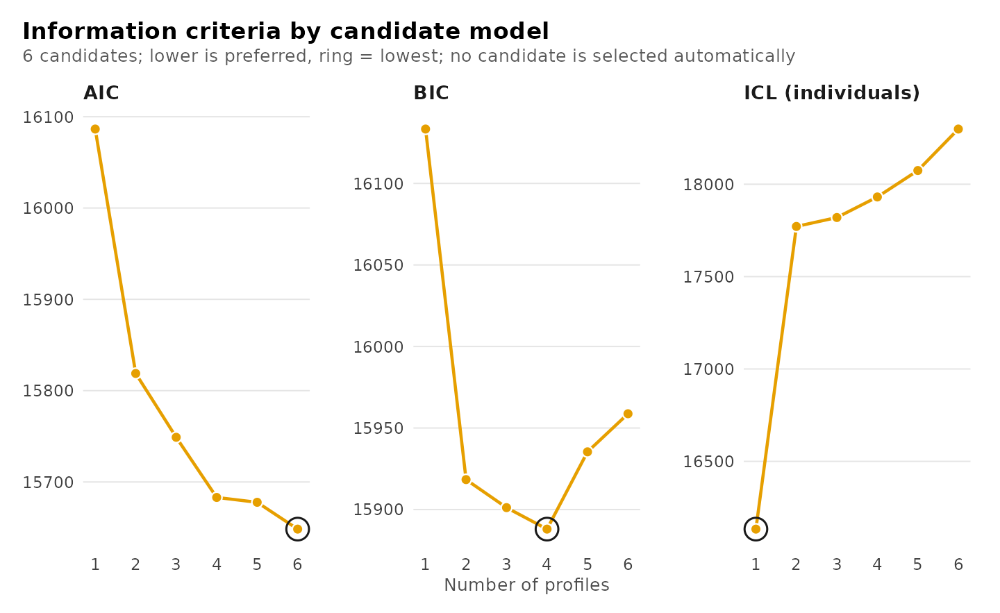
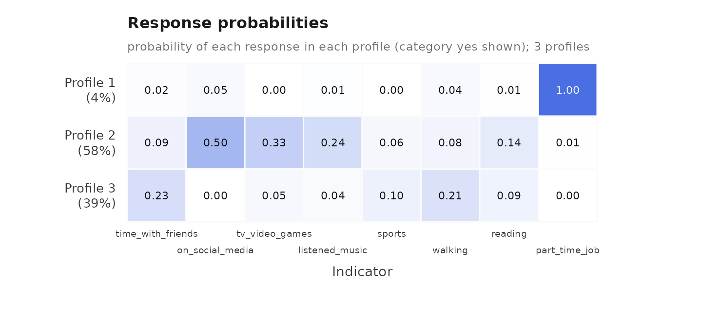
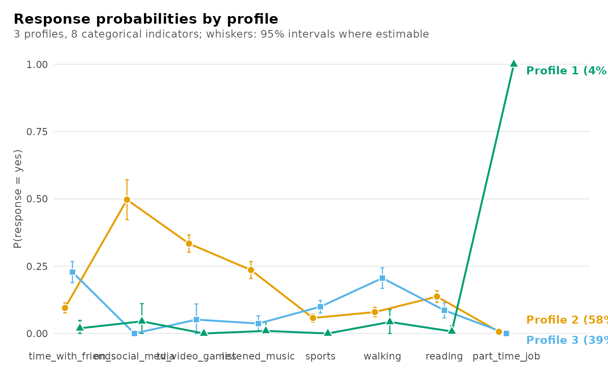
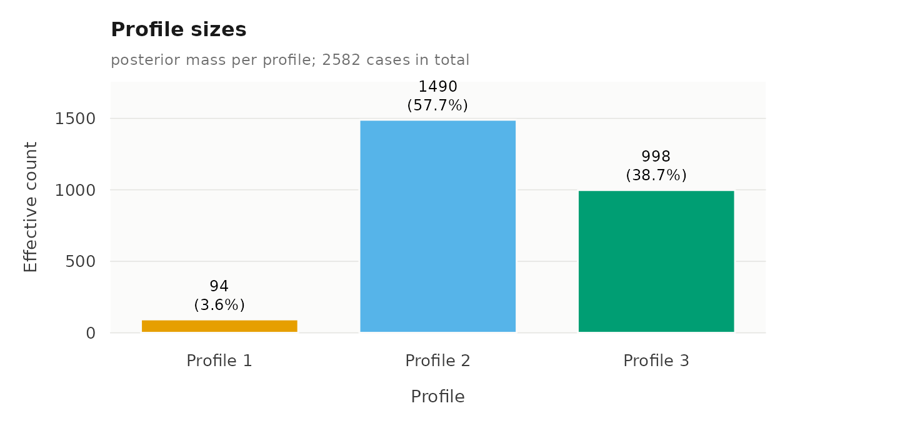
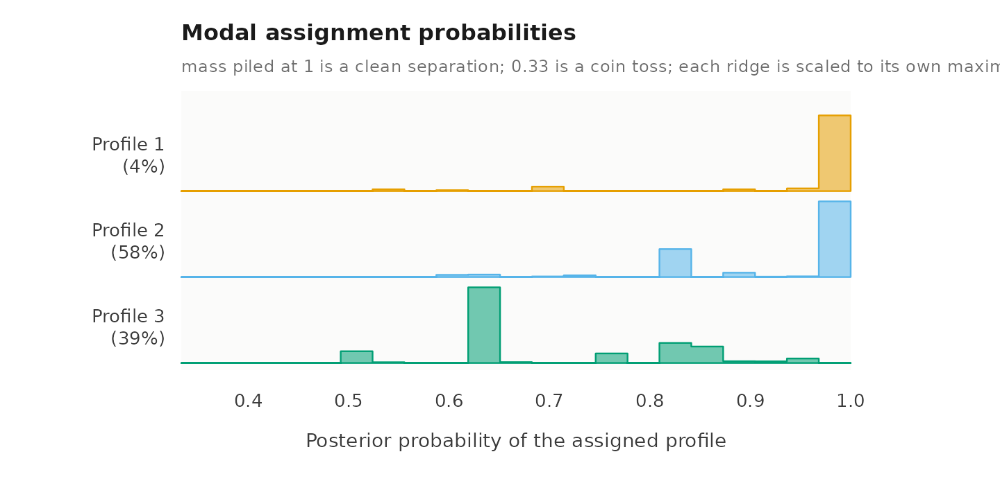
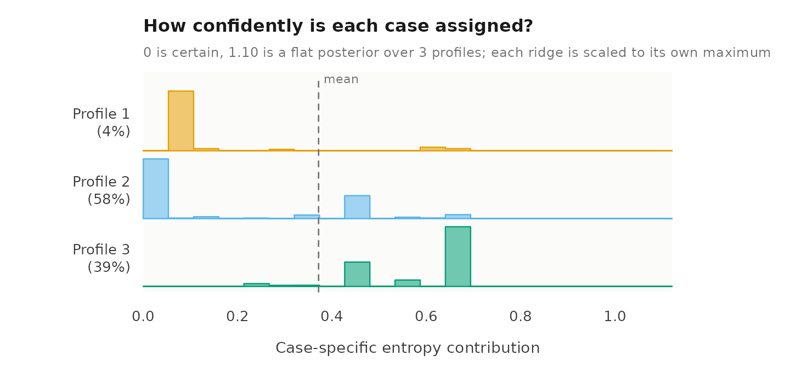
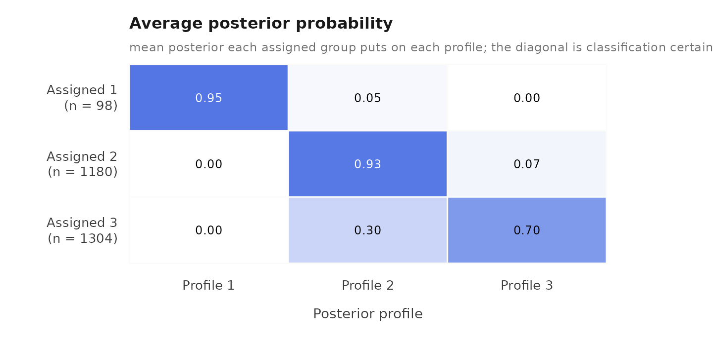

Latent class analysis: a complete workflow
Written by Mohammed Saqr and Sonsoles López-Pernas
Source:vignettes/articles/workflow-lca.Rmd
workflow-lca.RmdLatent class analysis (LCA) is a mixture model for categorical
indicators. It assumes that the observations come from a small number of
unobserved classes, and that within each class the indicators are
independent, each with its own response probabilities. This vignette
presents a complete single-level analysis: description of the data,
selection of the number of classes, estimation, interpretation,
evaluation of the classification, and the relation of the classes to a
distal outcome. The final section extends the model to two levels. In
the output of this package the classes of observations are labelled
profile_1, profile_2, and so on.
The estimation uses random starting values, so the seed is set once to make the results reproducible.
Data
The student_esm data contain 2,582 experience-sampling
reports from university students. At each report a student indicated
whether they had been engaged in each of eight activities, and rated how
happy, relaxed, worried and exhausted they felt. The aim of the analysis
is to identify typical combinations of activities.
activities <- c("time_with_friends", "on_social_media", "tv_video_games",
"listened_music", "sports", "walking", "reading",
"part_time_job")
descriptives(student_esm, activities)
#> variable n n_missing mean sd min max n_distinct
#> 1 time_with_friends 2582 0 NA NA NA NA 2
#> 2 on_social_media 2582 0 NA NA NA NA 2
#> 3 tv_video_games 2582 0 NA NA NA NA 2
#> 4 listened_music 2582 0 NA NA NA NA 2
#> 5 sports 2582 0 NA NA NA NA 2
#> 6 walking 2582 0 NA NA NA NA 2
#> 7 reading 2582 0 NA NA NA NA 2
#> 8 part_time_job 2582 0 NA NA NA NA 2The reports are nested in students. The first part of this vignette treats each report as an independent observation, which corresponds to the conventional single-level model. The nesting is taken into account in the final section.
Selecting the number of classes
enumerate_lca() estimates models with one to six classes
and returns the results in one table.
models <- enumerate_lca(student_esm, activities, n_classes = 1:6)
plot(models)
summary(models)
#> Class enumeration: 6 candidates, 6 converged, 0 failed to fit
#> 4 distinct candidate(s) are minimal under some criterion.
#> No candidate is selected automatically. Choose one convention and keep it.
#> The candidates table shows 9 of its 26 columns; get_results(x, what = "candidates") returns all of them.
#>
#> -- candidates ------------------------------------------------------
#> n_profiles log_likelihood n_parameters aic bic icl_individual profile_entropy
#> 1 -8035 8 16086 16133 16133 NA
#> 2 -7892 17 15819 15918 17771 0.4823
#> 3 -7848 26 15749 15901 17820 0.6618
#> 4 -7807 35 15683 15888 17931 0.7146
#> 5 -7795 44 15678 15935 18074 0.7427
#> 6 -7771 53 15648 15959 18299 0.7471
#> converged boundary
#> TRUE FALSE
#> TRUE FALSE
#> TRUE FALSE
#> TRUE FALSE
#> TRUE FALSE
#> TRUE FALSE
#>
#> -- criteria --------------------------------------------------------
#> criterion convention n_profiles n_group_classes model value
#> aic <NA> 6 1 <NA> 15648
#> kic <NA> 6 1 <NA> 15704
#> bic groups 4 1 <NA> 15888
#> bic individuals 4 1 <NA> 15888
#> sabic groups 4 1 <NA> 15777
#> sabic individuals 4 1 <NA> 15777
#> caic groups 4 1 <NA> 15923
#> caic individuals 4 1 <NA> 15923
#> awe groups 2 1 <NA> 16103
#> awe individuals 1 1 <NA> 16220
#> ... 4 more rows. get_results(x, what = "criteria")
#>
#> 2 tables above, truncated to fit. get_results(x, what = ) returns any
#> of them whole, and get_results(x, what = "all") returns every one.The BIC is lowest for four classes, 13.2 points below the three-class model. The fourth class, however, contains 1.3% of the reports (about 32), which describe many activities at once; a class of this size is poorly supported, and the ICL, which penalizes classification uncertainty, is lower for three classes than for four. The ICL is lowest for one class, which has no uncertainty to penalize, and among the models with more than one class it is lowest for two; the two-class solution, however, has a relative entropy below 0.5 and therefore separates the reports poorly. The three-class model is retained.
Estimation
lca() fits a single-level latent class model.
fit <- lca(student_esm, activities, n_classes = 3)
fit
#> Latent class analysis: 3 classes
#> 2582 observations; 8 categorical indicators
#> Classes are labelled profile_1, profile_2, ... in every table.
#> Log likelihood: -7848.453002 | AIC: 15748.906 | BIC: 15901.170
#> Converged: TRUE | iterations: 45 | best start: 7/10
#>
#> profile indicator category probability threshold
#> 1 time_with_friends no 9.81e-01 3.9264
#> 2 time_with_friends no 9.05e-01 2.2542
#> 3 time_with_friends no 7.72e-01 1.2195
#> 1 time_with_friends yes 1.93e-02 NA
#> 2 time_with_friends yes 9.50e-02 NA
#> 3 time_with_friends yes 2.28e-01 NA
#> 1 on_social_media no 9.55e-01 3.0545
#> 2 on_social_media no 5.03e-01 0.0114
#> 3 on_social_media no 1.00e+00 13.0106
#> 1 on_social_media yes 4.50e-02 NA
#> 2 on_social_media yes 4.97e-01 NA
#> 3 on_social_media yes 2.24e-06 NA
#> 1 tv_video_games no 1.00e+00 23.0259
#> 2 tv_video_games no 6.66e-01 0.6905
#> 3 tv_video_games no 9.48e-01 2.9130
#> 1 tv_video_games yes 1.00e-10 NA
#> 2 tv_video_games yes 3.34e-01 NA
#> 3 tv_video_games yes 5.15e-02 NA
#> 1 listened_music no 9.90e-01 4.6459
#> 2 listened_music no 7.64e-01 1.1759
#> ... 28 more rows. get_results(x, "responses")
#>
#> Every other table: get_results(x, what = ), or get_results(x, "all").Interpretation of the classes
The heatmap shows, for each class, the estimated probability that the activity was reported.
plot(fit, what = "heatmap")
The largest class, comprising 58% of the reports, is characterized by screen-based activities: social media, television and video games, and music. The smallest class, 4% of the reports, consists almost entirely of reports of working at a part-time job. The third class, 39% of the reports, has elevated probabilities of spending time with friends, walking and sport, and a probability of social media use close to zero. The same probabilities are shown below as profiles across the activities, with 95% confidence intervals where the probability is not on its boundary.
plot(fit, what = "responses")
The probabilities with their standard errors. Several are estimated at zero or one; a standard error is not defined on the boundary of the parameter space, so those are held at their bound and have none.
head(get_results(fit, "responses"), 8)
#> profile indicator category probability threshold probability_standard_error
#> 1 1 time_with_friends no 0.9807 3.9264 0.01497
#> 2 2 time_with_friends no 0.9050 2.2542 0.00945
#> 3 3 time_with_friends no 0.7720 1.2195 0.02004
#> 4 1 time_with_friends yes 0.0193 NA 0.01497
#> 5 2 time_with_friends yes 0.0950 NA 0.00945
#> 6 3 time_with_friends yes 0.2280 NA 0.02004
#> 7 1 on_social_media no 0.9550 3.0545 0.03353
#> 8 2 on_social_media no 0.5029 0.0114 0.03785Classification quality
diagnostics() reports the classification measures and
draws the four classification plots: the effective size of each class,
the distribution of the posterior probability of each report’s assigned
class, each report’s contribution to the classification entropy, and the
average posterior probability matrix, which shows which classes are
confused with which.
diagnostics(fit)



#> Classification quality: 3 profiles
#>
#> Relative entropy individuals 0.662
#> Smallest class individuals 93.6 (3.6%)
#> Lowest avg posterior individuals 0.705
#> Largest residual 0.237 (on_social_media, walking; profile_1)
#>
#> Tables: get_results(x, what = "entropy" | "classification" |
#> "average_posteriors" | "residuals" | "all"). plot(x) draws them.The relative entropy of 0.66 indicates a moderately clear classification.
Classes and a distal outcome
three_step() estimates the mean of an outcome within
each class. It uses the BCH method, which weights each observation by
its posterior class probabilities and corrects for classification error
(Bolck, Croon and Hagenaars, 2004). The outcome here is the happiness
rating.
happiness <- three_step(fit, student_esm, outcome = "happy")
happiness
#> Distal outcome by class (bch, 95% CI)
#>
#> Class Mean 95% CI SE Effective n
#> ----- ---- ------------ ----- -----------
#> 1 4.53 [4.22, 4.83] 0.155 88.80
#> 2 4.63 [4.53, 4.73] 0.051 957.73
#> 3 5.30 [5.16, 5.43] 0.068 548.80Happiness is highest in the class of reports away from screens (5.30 on the seven-point scale), and lower in the screen-based class (4.63) and the work class (4.53).
Extension to two levels
Each student contributes many reports, so the reports are not
independent. When the student identifier is supplied as id,
multilca() estimates a two-level model: the classes of
reports are retained, and the students are in addition grouped into
latent classes that differ in the proportion of their reports belonging
to each class.
two_level <- multilca(student_esm, activities, id = "student",
n_profiles = 3, n_group_classes = 2)
get_results(two_level, "profile_probabilities")
#> group_class profile probability group_class_probability
#> 1 1 1 0.7290 0.64
#> 2 1 2 0.2495 0.64
#> 3 1 3 0.0215 0.64
#> 4 2 1 0.1059 0.36
#> 5 2 2 0.2256 0.36
#> 6 2 3 0.6685 0.36The two-level model is presented in detail in
vignette("lca").